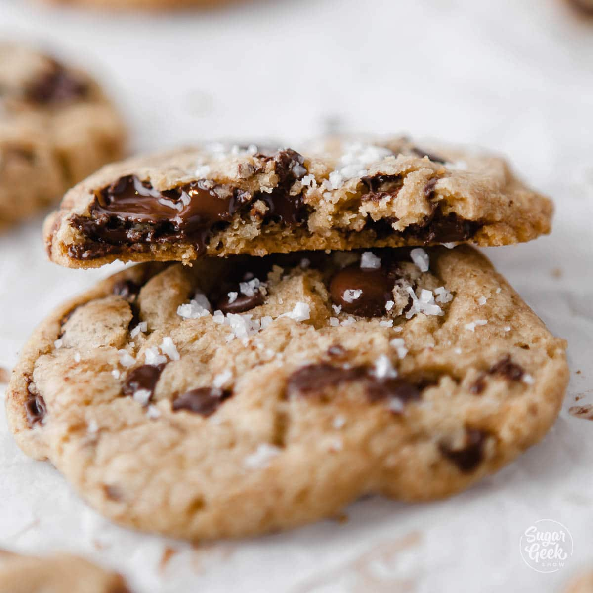

Chocolate Chip Cookies

Description
Note, I borrowed this image from https://sugargeekshow.com/recipe/sea-salt-chocolate-chip-cookies/ until I can make my own batch and change to a much uglier picture.
Ingredients
- 150g white sugar
- 165g brown sugar
- 2 sticks of room temperature butter
- 2 large, room temperature eggs
- 288g AP flour
- 8g salt
- 6g baking soda
- 1 to 1.5 bags semi-sweet chocolate chips
- flakey salt for garnish
Directions
- pre-heat oven to 350 degrees
- mix the flour, salt, and baking soda together in a medium bowl (sift if necessary)
- cream the butter and sugar with a mixer or hand mixer
- add the eggs and mix until combined
- add the vanilla and mix until combined
- gradually add the dry mix into the wet, be sure to scrape the sides
- once everything is combined, add the chocolate chips and mix briefly
- portion onto parchment-lined baking sheets
- bake 7-9 minutes until center is set
- after removing from oven, immediately sprinkle with flakey salt
- once cookies are solid enough to transfer, but still warm, transfer to a rack and cool
Home